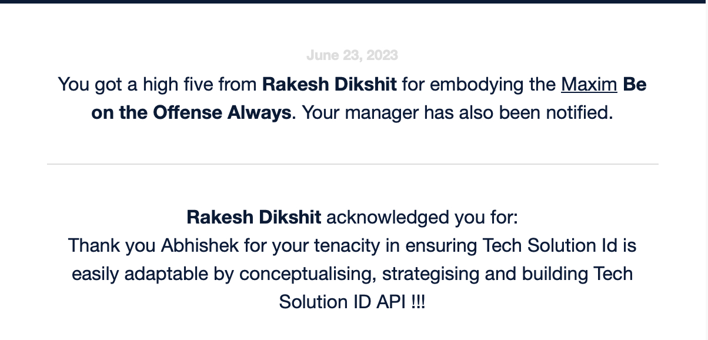
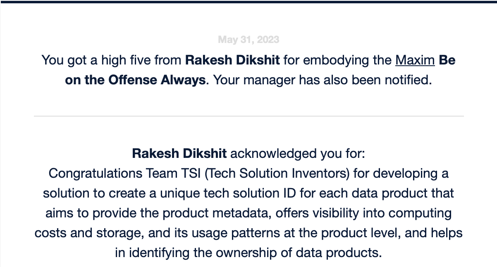
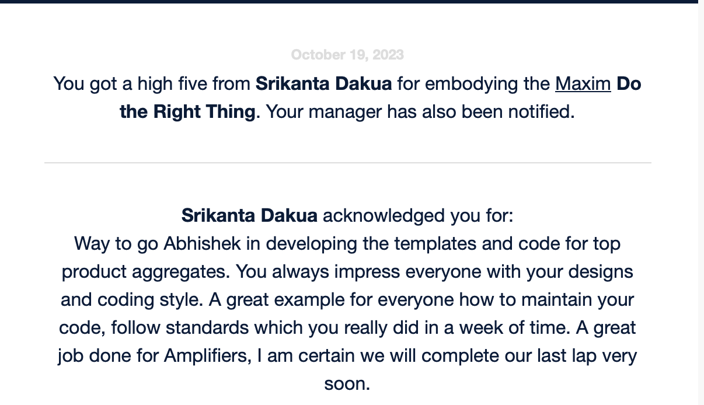
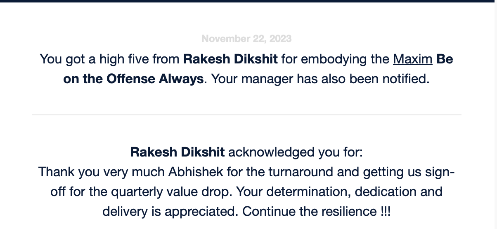
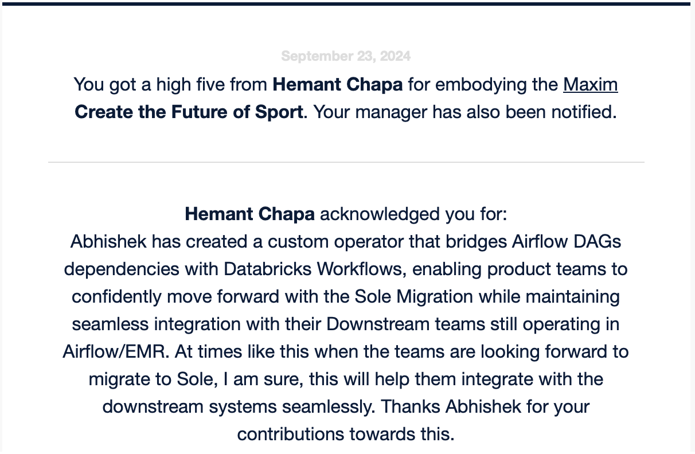
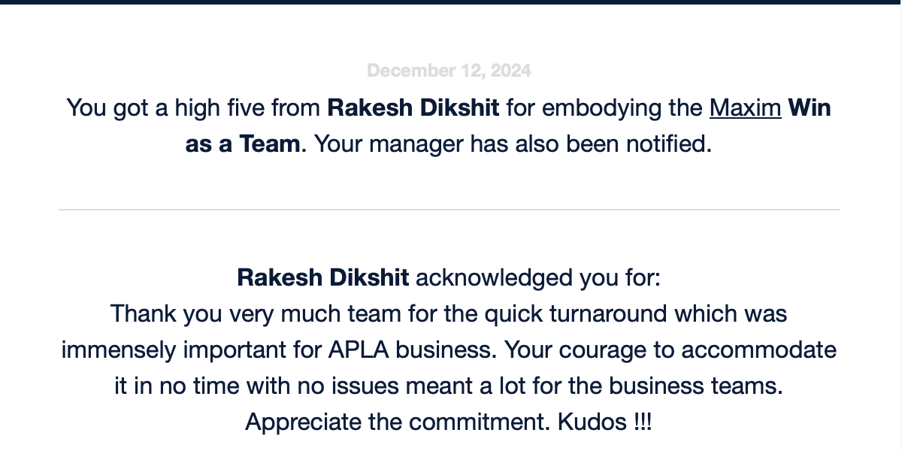

Education
Biju Patnaik University of Technology (BPUT)
Bachelor's degreeBhubaneshwar, Odisha - India
Grade: 80.8 %
2012-2016Sree Ayyappa Public School (SAPS)
Higher Secondary EducationBokaro Steel City, Jharkhand - India
Grade: 82 %
2010-2012Jawahar Navodaya Vidyalaya (JNV)
Secondary EducationMuzaffarpur, Bihar - India
Grade: 91.6 %
2009-2010Experience
Senior Data Engineer - Enterprise Data Analytics & Artificial Intelligence
NikeAugust 2022 - Present
- Worked on processing and building foundational layer with clickstream data generated by users navigating Nike.com, Nike App & SNKRS App to derive actionable insights into user behavior, enabling business teams to optimize digital experiences, improve marketing strategies, and enhance product development.
Nike Direct Clickstream:
- Onboarded eCommerce platform data from third-party partners (3PP) operating outside the Nike ecosystem onto the Nike Data Foundation.
- Ensured the availability of complete, trusted, and high-quality data to support global and APLA demand forecasting, enabling data-driven decision-making for teams across Operations.
Third-Party Partners(3PP):
- Developed a custom operator to bridge Airflow DAG dependencies with Databricks Workflows, addressing challenges faced during the migration of pipelines to the new Databricks platform. This solution ensured seamless integration with downstream teams still operating on Airflow/EMR.
Databricks Workflow Dependency Sensor:
- Built a foundational data layer using Adobe Clickstream data for product offerings and add-to-cart activity from Nike.net partners, enabling AI/ML teams to train models for recommendation engines, driving personalized user experiences & business growth.
Nike.net Product Recommendations:
- Designed and developed TechSolution ID, a unique identifier for data products, enabling scalable measurement of engineering metrics across tools and processes.
Infrastructure Cost & Utilization:
- Contributed to the development of Nike's proprietary Spark-expectations framework, which performs in-flight data quality checks during pipeline execution.
- Customized the great-expectations library and integrated it with Nike's managed-spark framework to enable dynamic data quality rule ingestion via Excel.
Data Quality:
- Implemented telemetry to monitor and analyze data usage and performance metrics, providing insights into access patterns and frequency.
Telemetry:
- Architect and lead the development of scalable data pipelines and platform features.
- Translate business needs into technical solutions in collaboration with product teams, business stakeholders, and data science teams.
- Enforce best practices across teams, including governance, quality, and coding standards.
- Lead code reviews, pair programming, and mentoring.
- Troubleshoot complex systems and optimize distributed pipelines.
- Automate deployments using CI/CD and DevOps practices.
Roles & Responsibilities:
Tech Stacks:
Python, PySpark, Databricks, Kafka, Airflow, Snowflake, SQL, Data Engineering, Software Engineering, Amazon Web Services (AWS), Data Analysis, Data Warehousing, Data Lake, Delta Lake, Jenkins etc.
Senior Data Engineer
Change HealthcareDec 2021 - July 2022
- Engaged in Healthcare Interoperability, enabling seamless data exchange and accurate interpretation across systems and organizational boundaries. This facilitates the efficient sharing of healthcare information with providers and individuals across various devices, such as computers, tablets, and smartphones. Additionally, it supports third-party application developers in creating medical applications that can be easily integrated into existing systems.
- Contributed to the design and implementation of use cases, including external clients accessing internal data, internal users accessing external client data, and internal clients accessing internal data. Played a key role in implementing industry-standard methods for accessing integrated records, providing a standardized data access layer for client applications to read, update, and delete records, while eliminating the need for proprietary interfaces.
Resbonsibilties:
Tech Stacks:
Python, PySpark, Scala, Airflow, SQL, Data Engineering, Amazon Web Services (AWS), Data Analysis, Data Warehousing, AWS - s3, EMR, Lambda, Redshift, Glue, Step function etc.
Senior Software Engineer - Data & Analytics Platform
Cloudwick TechnologiesJan 2020 - Dec 2021
Project Description:
Worked on developing an in-house Next-Generation Data Analytics Platform (NGAP), a strategic initiative for Big Data solutions implemented using EMR and Databricks Spark Compute on the AWS Cloud. NGAP is a user-friendly, security- and privacy-compliant platform designed to support a wide range of use cases, including data storage, ingestion, and curation. It provides dedicated compute resources for diverse workloads and offers advanced features such as self-service capabilities, ad-hoc query tools, job scheduling, and more, enabling seamless and efficient data processing and analytics- Designed and implemented a Flask-based API to enable NGAP users to debug and monitor logs through an UI.
- Developed a Submission Service to manage the submission and state of applications on AWS EMR clusters and EC2 instances.
- Contributed in Spark Best Practices Initiative (Managed-Spark) to help users write optimized and runtime-agnostic Spark code.
- Built an AWS resource cost analysis dashboard to provide insights into cloud resource usage and expenses.
- Automated IAM roles and policy management, reducing access provisioning time from 1 day to just 1 hour.
- Developed various custom Airflow operators to enhance Pipeline automation, manage access, and ensure security compliance.
- Provided technical guidance to cross-functional teams on implementing both streaming and batch data processing services.
Roles & Responsibilities:
Tech Stacks:
Python, PySpark, Airflow, SQL, Data Engineering, Hadoop, Hive, Software Engineering, Amazon Web Services (AWS), Jenkins, Terraform, Docker, Kubernetes, GitOps, DevOps, Terraform, Jenkins, Linux, Netflix Genie, Data Analysis, Data Warehousing, AWS - s3, EMR, Lambda, Redshift, Glue, Step function, ECR, ECS, Ec2, IAM, ALB, CloudWatch, API GW etc.
Software Engineer - BigData
CenturyLinkNov 2016 - Dec 2019
- Century Link data lake is being created to facilitate their Data Science team to work on multiple loyalty management use cases. Data is being pulled from multiple diverse data sources (including their traditional RDBMS, SFTP, S3, and Hive Table) then dump into the staging area that is Redshift. Using Spark, we will implement business logic on staging data and end results provided to the data science team. Handling various types of file formats such as Avro, JSON, Parquet, CSV, etc.
Century Link Data lake:
- Designed and Worked on creating a template to process any fixed-width flat files, wrote a shell, python, and PySpark code which can be used among the team to process and ingest files to HDFS and thus create a hive table on top of that.
PySpark Template - File processing Ingestion Framework:
- Data from Impala was indexed using Apache SOLR and exposed over Java Jersey JAX-RS based API to the end user or consumer facing UI.
Apache SOLR:
- Contributed to building data pipelines, including data ingestion using SQOOP into HDFS, and transforming and analyzing data using Hive and Impala for reporting purposes.
- Extracted data from various sources such as RDBMS, remote servers, HDFS, Amazon S3 buckets, and internal SFTP, and loaded it into a data lake and S3 bucket. Developed Spark jobs to process the ingested data efficiently.
- Performed monitoring and root cause analysis of scheduled jobs using tools like Oozie, Agile Scheduler, and Crontab to ensure smooth operations and timely issue resolution.
- Collaborated effectively with team members, leveraging strong verbal communication skills to ensure the successful execution of projects.
Roles & Responsibilities:
Tech Stacks:
Python, PySpark, SQL, Data Engineering, Data Analysis, Data Warehousing, Haddop, Hive, Impala, Scoop, Shell Scripting, Linux, Cloudera, Oozie, Apache SOLR etc
Skills


Awards & Recognitions
Tech Solution ID API
NikeJune 2023
Received a High Five for developing an API to enable Tech Solution IDs for each product during Innovation Week. Designing an easy solution and implementing it in a week time frame for teams to easily adopt this product.
 Reusable Config Driven Code template
NikeOct 2023
Received a High Five for Building a re-usable config driven code template that is used of multiple teams while creating data pipelines.
Stalkholders Communication, Demo & Sign-Off - Clickstream
NikeNov 2023
Received High Five on getting an Sign-Off on after leveraging the clickstream data generated by users navigating Nike.com, Nike App, SNKRS App, NRC (Nike Running Club), and NTC (Nike Training Club) to provide actionable insights into user behavior, enabling business teams to optimize digital experiences, improve marketing strategies, and enhance product development.
Created Custom Airflow Operators
NikeSep 2024
Received a High Five for developing a custom operator to bridge Airflow DAG dependencies with Databricks Workflows, addressing challenges faced during the migration of pipelines to the new Databricks platform. This solution ensured seamless integration with downstream teams still operating on Airflow/EMR.
Migration & Enhancement - Third Party Partners Data
NikeOct 2024
Onboarded eCommerce platform data from third-party partners (3PP) operating outside the Nike ecosystem onto the Nike Data Foundation. Ensured the availability of complete, trusted, and high-quality data to support global and APLA demand forecasting, enabling data-driven decision-making for teams across Operations.

Onbording new 3PP Partner
NikeDec 2024
Received a High Five for the quick turnaround in onboarding the new 3PP Musinsa Partner.
